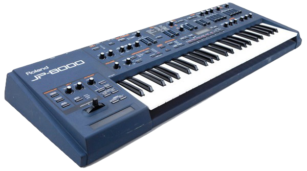

El Eurotrance es una fusión de Trance y Eurodance que surgió a finales de los 90. Si bien el término se usaba con mayor ligereza, a veces como un término general, ahora se reconoce con mayor frecuencia como un género diferenciado con características específicas. Sus elementos trance se inspiraron principalmente en el Hard Trance, con sus pegadizas secciones melódicas, así como en el Dream Trance, influenciado de forma similar por el Eurodance. El género también recibió, en menor medida, influencias del Happy Hardcore alemán y está emparentado con el Italo Dance, que surgió en la misma época.
Eurotrance is a fusion of Trance and Eurodance that emerged in the late 90s. While the term used to be applied more loosely, sometimes as a catch-all, it's now more often recognized as a distinct genre with its own specific traits. Its trance elements drew mainly from Hard Trance, with its catchy melodic sections, as well as from Dream Trance, similarly influenced by Eurodance. The genre also picked up, to a lesser extent, influences from German Happy Hardcore, and is related to Italo Dance, which emerged around the same time.

El Eurotrance mantiene un tempo rápido de alrededor de 140-160 BPM, con un groove vibrante y muy bailable. Los patrones de bajo pueden variar desde ritmos simples y poco convencionales hasta otros más rodantes y sincopados. La producción suele ser bastante sencilla, con baterías TR-909 o similares con un procesamiento mínimo, y melodías pegadizas con leads de sintetizador de sierra simples (Roland JP-8000 analogue modelling synthesizer). El Eurotrance tiene una estructura más segmentada que el trance temprano, pero las rupturas y los desarrollos son mucho más cortos y sutiles en comparación con el Uplifting Trance, que surgió casi al mismo tiempo como un género relacionado. Las voces se incluyen comúnmente, pero no son esenciales. Tienden a ser más animadas y juguetonas en comparación con las interpretaciones vocales más maduras que se encuentran en el Vocal Trance (que también está más estrechamente vinculado al Uplifting y al Progressive Trance), aunque los límites entre ambos a veces eran difusos.Eurotrance keeps a fast tempo of around 140-160 BPM, with a vibrant, highly danceable groove. Bass patterns can range from simple, unconventional rhythms to more rolling, syncopated ones. Production is usually fairly straightforward, with TR-909 or similar drums with minimal processing, and catchy melodies built from simple sawtooth synth leads (Roland JP-8000 analogue modelling synthesizer). Eurotrance has a more segmented structure than early trance, but its breaks and buildups are much shorter and subtler compared to Uplifting Trance, which emerged around the same time as a related genre. Vocals are commonly included, but not essential. They tend to be more upbeat and playful compared to the more mature vocal performances found in Vocal Trance (which is also more closely tied to Uplifting and Progressive Trance), though the lines between the two were sometimes blurry.
El Eurotrance surgió principalmente en Alemania, con artistas de Eurodance como Sash! que impulsaron el género hacia una nueva dirección. Se definiría aún más por artistas como Alice Deejay, donde "Better Off Alone" alcanzó su máximo auge. Los artistas belgas Sylver y Lasgo también contribuyeron al éxito del género. A mediados de la década de 2000, el Eurotrance evolucionó en gran medida hacia Hands Up, que incluía baterías y solos más potentes, pero también con una sensibilidad aún más dance-pop. El Eurotrance mantuvo su popularidad e influencia durante la década de 2000, pero, al igual que el Trance en general, decayó considerablemente en la década de 2010, siendo reemplazado por varios nuevos estilos de EDM.
Eurotrance emerged mainly in Germany, with Eurodance artists like Sash! pushing the genre in a new direction. It would be further defined by artists like Alice Deejay, whose "Better Off Alone" hit its absolute peak. Belgian artists Sylver and Lasgo also contributed to the genre's success. By the mid-2000s, Eurotrance had largely evolved into Hands Up, which featured punchier drums and solos, but with an even more dance-pop sensibility. Eurotrance held onto its popularity and influence through the 2000s, but, like Trance in general, declined considerably in the 2010s, replaced by various new EDM styles.